There are eight famous Ganesh Temples around Pune and these temples are called Ashtavinayak temples. Many tour agencies arrange this tour, and Purple Tour is one among them. We had been to these eight temples through Purple Tour. They provide AC and Non-AC bus services.
Since it is a two-day trip, a one-night stay becomes mandatory. Accommodations in either a dormitory or separate rooms are provided based on choice. The tour package includes the first day's breakfast, lunch, dinner, and night stay, and the second day's breakfast, lunch, and evening tea.
The tour starts around 6:30 am from Pune and completes by the next day, dropping us back to Pune around 8:30 pm. The total distance covered in this tour is around 750 km. Except for the highway roads like Pune–Nasik and the Pune–Mumbai Expressway (about 200 km), the remaining roads are too bad, and the journey is quite jerky!
A few temples are crowded; of course, a queue system is followed and all the temples are kept open throughout the day. People who visit Ashtavinayak temples offer a coconut to the first temple, and the same coconut is offered at every remaining temple. Here, in most of the temples, we can go close to the deity to pray and offer flowers.
In all temples, there is a donation center to receive offerings. Also, provisions exist to pay a donation with a request to do archana, and they will send the Prasad to our home by post. All these eight temples are under the Chinchwad Deosthan Trust. All the eight Ganapathis are “swayambhu” (self-manifested).
On the first day, we visited Moreshwar Temple (Morgaon), Siddhatek Temple (Siddhatek), Chintamani Temple (Theur), Mahaganapathi Temple (Ranjangaon), and Vighneshwar Temple (Ozar). We stayed in a hotel at Ozar, close to the temple. The hotel was good. Next day, we visited Girijatmaj Temple (Lenyadri), Varadavinayak Temple (Mahad), and Ballaleshwar Temple (Pali).
Some people believe that after visiting all the eight temples, one has to come to the first temple again to complete the circle. Of course, Purple Tour did not take us to the first temple again. If we want to visit the first temple again, we may have to stay one more day.
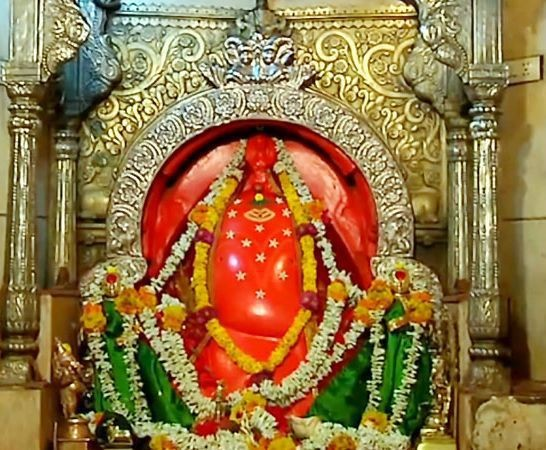
From Pune, Morgaon is about 70 km away. It is approximately a two-hour journey via Hadapsar. On the way, we took a break for breakfast and tea. This temple, when we visited, was not crowded much.
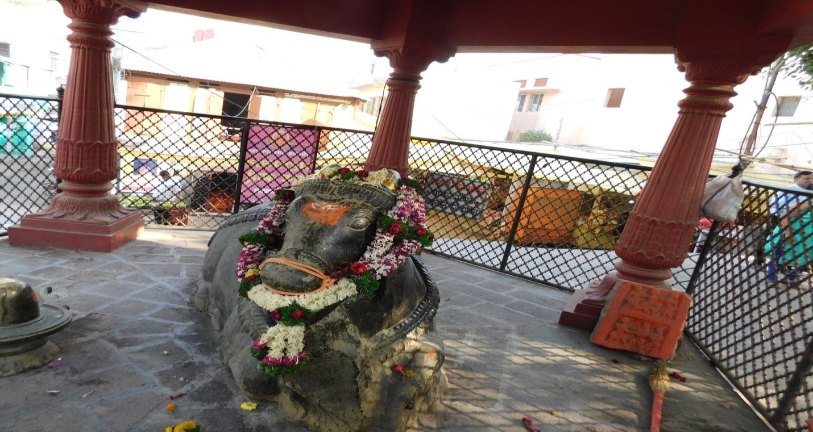
In this temple, we can see a Nandi as well.
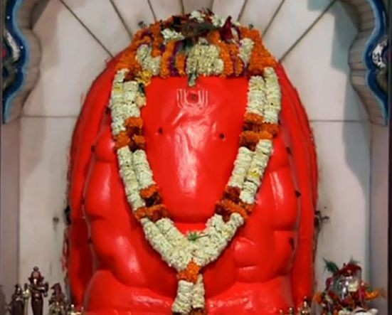
From Morgaon, Siddhivinayak Temple in Siddhatek is about 70 km away towards Daund. This road is very bad, and on both sides, we can see sugarcane fields. Just before the temple, there is a river. In earlier days, to visit this temple, one had to cross this river by ferry. Now there is a bridge, and the bus goes close to the temple.
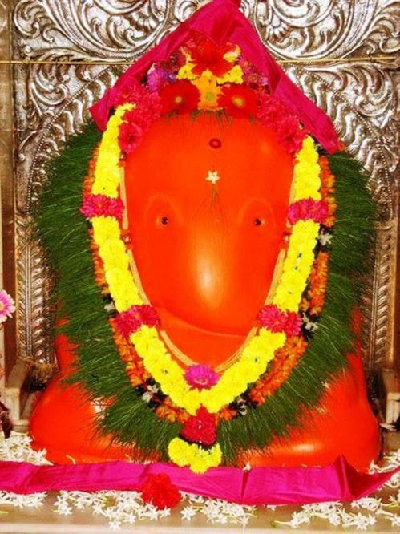
Theur is about 90 km away from Siddhatek. It was about a 3-hour journey on a rough road. On the way, we took lunch in a hotel. They served chapati, rice, dal, and a subji. The food was good.
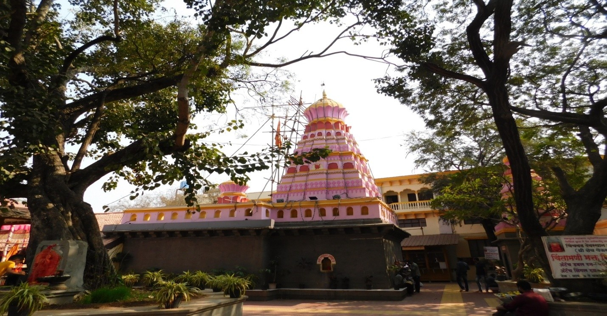
The temple is very peaceful and well-maintained.
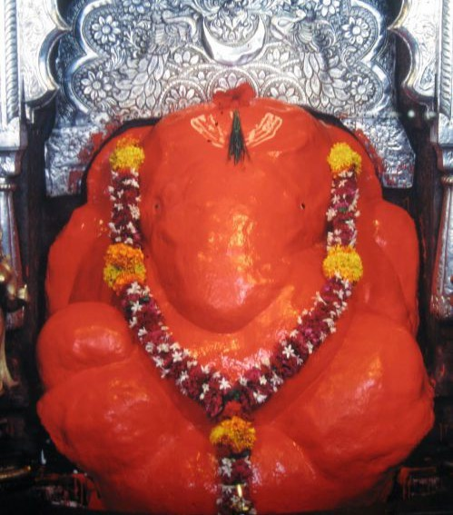
This temple is close to Aurangabad. Earlier also we had been to this temple. This temple is fairly a big temple. Close to the temple, fresh vegetables are sold. Our tour guide took us to a special tea stall for a cup of tea. We had a nice tea.
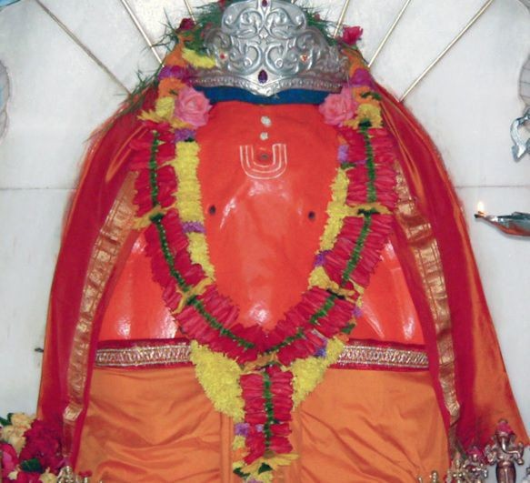
It is about 70 km from Ranjangaon, about 2 hours travel. Around 8 pm, we reached this temple. In the temple premises, we saw lots of shops selling brass articles and photos. Close to this temple, our night stay was arranged in a hotel. In the same hotel, we took dinner also. Dinner was good. The room was also quite clean and neat.
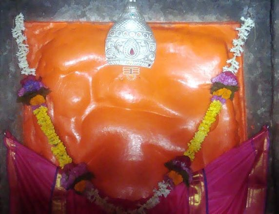
Lenyadri is about 15 km from Ozar. We got up around 4 am and left the place around 5:30 am after tea. We reached this place around 6:30 am. This temple is over a hill, in a cave. We had to climb 400 steep steps.
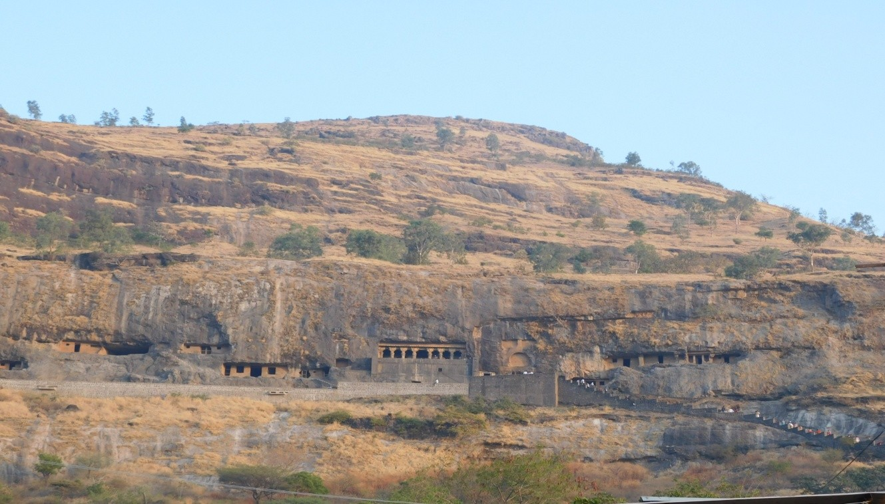
We did aarti also in this temple. Adjacent to the Ganesh deity, a Shivling is also there.
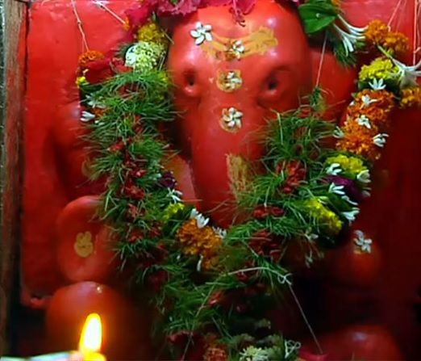
Mahad is some 250 km away from Lenyadri. Mahad is towards the Khopoli side. For a certain distance, we travelled on the Pune-Mumbai Expressway. This temple is fairly big and some crowd was there. We had to stand in the queue for about 20 minutes. In this temple premises, a Datta Mandir is also there.
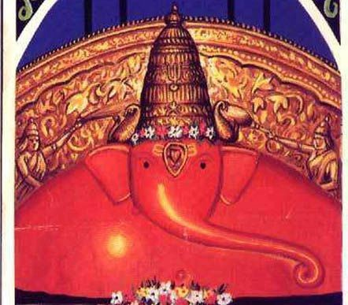
Pali is about 80 km away from Mahad. On the way, we had our lunch in a hotel. This hotel was very good. Super clean. The food was very nice. With this temple, we completed our tour. From Pali, Pune is around a 3-hour journey. We were dropped at Aundh and reached home around 8 pm.
Overall, the Ashtavinayak tour was a fulfilling spiritual journey across 750 km. Despite the jerky roads and long travel hours, the experience of visiting all eight swayambhu Ganapatis—from the hill-top caves of Lenyadri to the river-side peace of Siddhatek—was deeply memorable. The arrangements by Purple Tour ensured we were well-fed and rested, making this two-day pilgrimage a smooth and sacred experience.